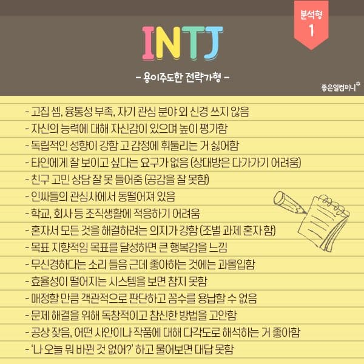

- 관련 정보
- 16personalities
- INTJ 나무위키
- 
부모님과 같이 찍은 사진은 없네요.
- 좋아하는 음악 듣기
- 관심있는 유튜브 영상보기
- 그림 그리기
영화<조커>의 포스터
2019년 부풀어오른 마음으로 대학교에 들어갔지만 코로나로 인해 대학생활은 1년밖에 하지 못하게 되었습니다.
벌써 코로나 백신 2차 접종까지 끝냈고, 졸업하기 전엔 꼭 학교에서 다시 공부해봤으면 좋겠습니다.
하루빨리 코로나 종식이 되기를 바랍니다!
좋아하는 것
아이즈원 - Panorama MV
싫어하는 것
| 월 | 화 | 수 | 목 | 금 | |
|---|---|---|---|---|---|
| 1 | 데이터베이스 | ||||
| 2 | |||||
| 3 | 영상으로 배우는 철학 | 데이터베이스 | |||
| 4 | |||||
| 5 | 자연어처리 | 컴퓨터 네트워크 | 웹프로그래밍 | 법과 역사로의 산책 | |
| 6 | |||||
| 7 | 컴파일러 구성론 | 컴퓨터 네트워크 | 웹프로그래밍 | ||
| 8 | 컴파일러 구성론 | 자연어처리 |
요즘 자주 듣는 노래